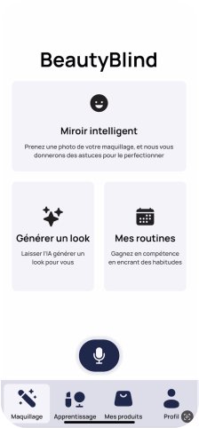
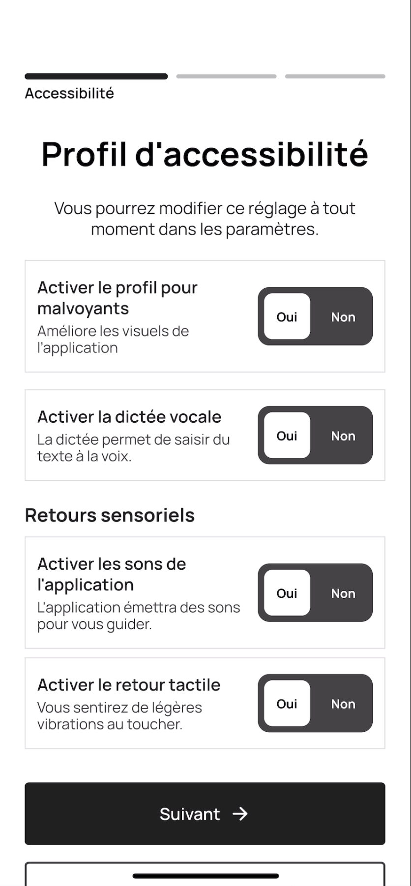
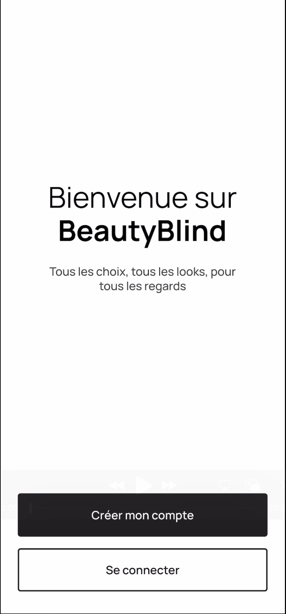
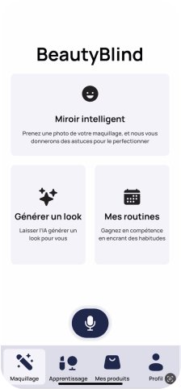
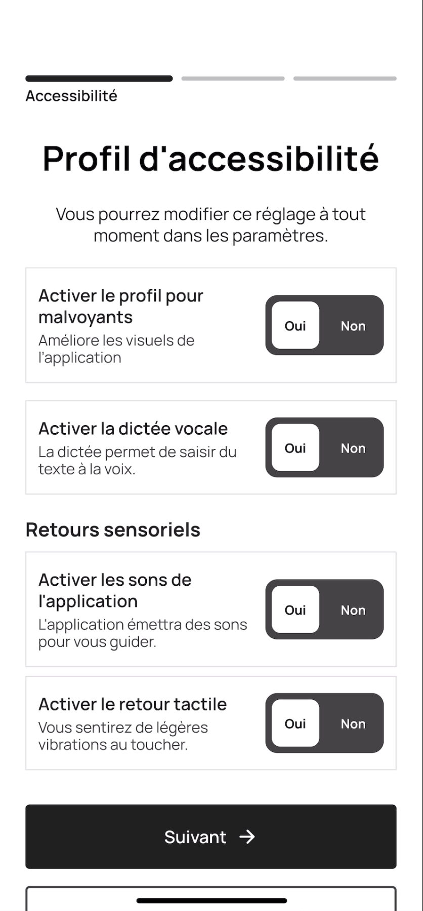
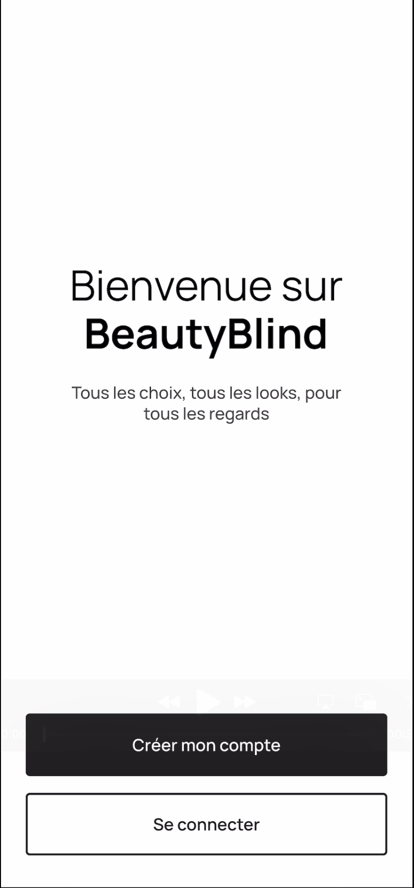

BLIND BEAUTY
Maquillage inclusif pour les personnes malvoyantes
🔎 Problématique
Le maquillage joue un rôle clé dans l’expression de soi et la confiance en soi. Pourtant, les personnes en situation de handicap visuel rencontrent de fortes difficultés d’accessibilité : absence de solutions adaptées, manque de tutos inclusifs et produits peu pensés pour leur usage quotidien.
✅ Résultat
Phase 1
📍 Université de Navarre
- Création de produits physiques adaptés pour une utilisation autonome.
- Développement d’une première version de l’application mobile, qui a servi de base pour la version plus complète et accessible.
Phase 2
📍 ECV
- Développement en équipe d’un wireframe interactif d’application mobile plus accessible et inclusif.
- Validation avec tests utilisateurs et feedback d’une participante malvoyante.
💡 Solution proposée
💄
PRODUITS
- Trousse de maquillage avec numéros en braille et avec des pochettes permettant de ranger les produits selon leur ordre d’application.
- Produits adaptés pour faciliter leur application.
📱
APPLICATION MOBILE
- Onboarding personnalisé selon le niveau de déficience visuelle
- Tutoriels audio
- Navigation vocale et gestuelle
- Scan des produits
- Accompagnement via IA
🛠️ Processus
Phase 1
- Recherche approfondie sur les besoins des personnes malvoyantes, création de prototypes physiques et première version de l’application.
📍 Université de Navarre
Phase 2
- Reprise en équipe, analyse des nouveautés depuis 2020, co-création avec une participante malvoyante, wireframes interactifs, tests utilisateurs, personas et cartes d’empathie, méthodes Crazy 8 et MoSCoW.
📍 ECV
 





✨ Exemple de produit
Une palette qui réunit bronzer, blush et highlighter, accompagnée de pinceaux pensés pour guider chaque geste.
→ Chaque produit est entouré d’une texture unique : la même se retrouve sur le pinceau correspondant, pour savoir instinctivement lequel utiliser à chaque étape.
→ Les poudres sont disposées dans l’ordre d’application, comme un petit chemin à suivre sans hésiter.
→ Et pour offrir encore plus de précision, les pinceaux ont un manche court : une manière de donner aux personnes malvoyantes un contrôle total et une confiance accrue dans leur rituel beauté.